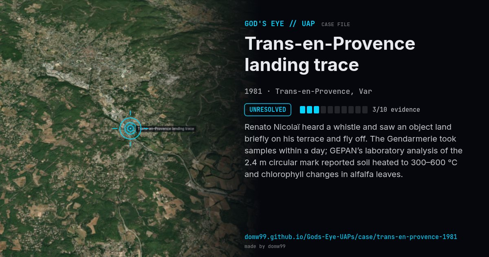

Trans-en-Provence landing trace
UNRESOLVED

Renato Nicolaï heard a whistle and saw an object land briefly on his terrace and fly off. The Gendarmerie took samples within a day; GEPAN’s laboratory analysis of the 2.4 m circular mark reported soil heated to 300–600 °C and chlorophyll changes in alfalfa leaves.
Explanation
The French government’s GEPAN (now GEIPAN, part of CNES) analysed soil and plant samples and reported heating and biochemical changes it could not attribute to a known cause. Skeptics suggest a vehicle or the witness.
What was seen
Shape: Lead-grey disc, two stacked saucers
Witnesses: Renato Nicolaï
Duration: Under a minute
Sources
Browse
- France
- 1980s
- Unresolved
- Landing and trace cases
- Official government documents
- Physical traces
- Discs and saucers